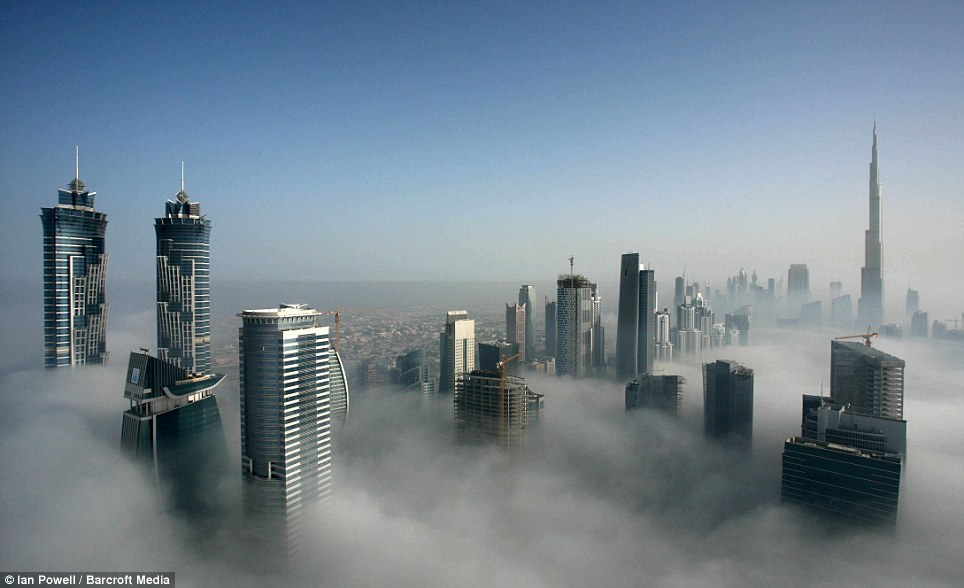

Franklin Cloudy
The Franklin City is getting colder everyday.
During the last 10 days we've registered a decrease in the temperature of about 2 degrees everyday, reaching -18° C. As everyone knows, this is unusual in a City located very close to the equator.